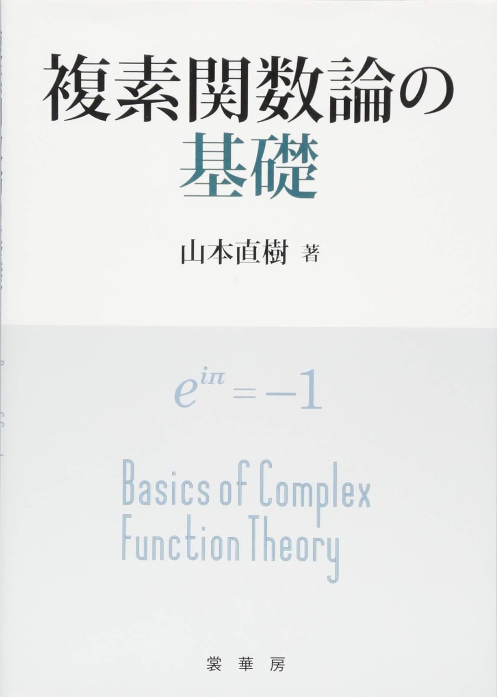

複素解析学
複素数の関数にかかわる理論についての書籍を紹介します。

複素関数論の基礎 山本直樹著
複素関数論を学び始める1冊目として最適だと思う本。厳密さより、まずは複素関数論の心を学ぶことが大事。著者は物理の先生なので、物理系の学生は特に読みやすい。
複素関数入門 チャーチル/ブラウン
複素関数論の初学者にもおすすめの一冊。丁寧な説明に加えて、例もたくさん示されており、基本的なことを一通り押さえることができる。また章末の練習問題が非常に充実しており(なんと500題以上！)、普段の学習にも院試勉強にも最適。
複素解析 宮地秀樹著
複素関数論を厳密に学びたい人におすすめの一冊。内容はしっかりハードなのに、例題が豊富にあるのが涙が出るほど嬉しい。また、より進んだ内容が注に載っていることも多く、モチベーションをつねに高めてくれて大変ありがたい。
入門複素関数 川平友規著
2019年に出た比較的新しい複素関数論の教科書。黒と赤の文字で描かれたデザインで非常に見やすく図も多い。学生のときに欲しかった一冊。視認性の観点でのストレスの少なさって意外と重要ですよね。